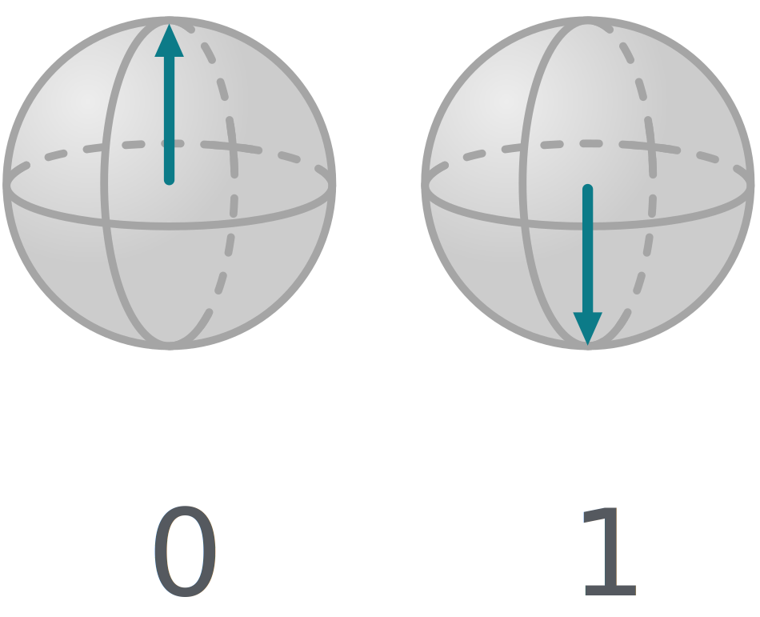

Quantencomputer – Qubits
Quantencomputern arbeiten an Stelle von Bits mit sogenannten Quantenbits. Ein Quantenbit oder Qubit stellt die kleinste Informationseinheit in der Welt der Quantencomputer dar. Sie ähneln Bits insofern, als es zwei messbare Zustände gibt, die mit 0 und 1 bezeichnet werden.
Aber Qubits haben auch einige Eigenschaften, die normale Bits nicht haben und die Qubits und damit Quantencomputer so besonders machen. Gemeinsam wollen wir herausfinden, welche das sind!
Genau wie ein herkömmlicher Computer braucht auch der Quantencomputer Möglichkeiten die Qubits zu beeinflussen: Quantengatter. Diese Gatter geben einen ersten Vorgeschmack auf das, was Quantencomputer so einzigartig macht. Wir werden ab sofort daher Quantenschaltkreise nutzen, um selbst Experimente mit Quantencomputern zu machen. Anders als bisher, stellt jede Zeile nun ein Qubit dar!
X-Gatter
• das X-Gatter an verschiedene Positionen schiebst und jeweils eine Messung durchführst,
• den Eingabewert von 0 auf 1 änderst und eine Messung durchführst
• und ein zweites X-Gatter hinzufügst und eine Messung durchführst! Notiere deine Beobachtungen!

Hinweise
- Jede Zeile stellt ein Qubit dar. Verändere die Eingabewerte, indem Du auf die Zahlen am Anfang einer Zeile klickst.
- Führe eine Messung durch, indem Du auf Auswerten klickst.
- Du kannst Quantengatter mittels Drag&Drop verschieben, hinzufügen oder entfernen.
Meine Messungen
H-Gatter
Hinweise
- Jede Zeile stellt ein Qubit dar. Verändere die Eingabewerte, indem Du auf die Zahlen am Anfang einer Zeile klickst.
- Führe eine Messung durch, indem Du auf Auswerten klickst.
- Du kannst Quantengatter mittels Drag&Drop verschieben, hinzufügen oder entfernen.